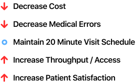
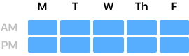
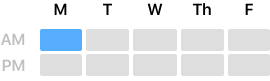
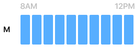
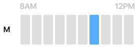
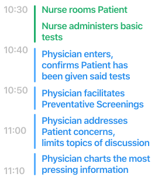

How might we reimagine the role of technology in healthcare with the intent of reducing Physician Burnout?
I would want to treat any of the people I take care of the same way I would treat a friend or a family member. I don't know if that's sustainable.
Family Medicine Physician, Pasadena
Physicians are the face, voice, and mind that KP’s members rely upon for their care. It’s their diligent and empathic traits that inspired over 12 million people to trust Kaiser Permanente with their health in 2019. However, as the industry has introduced itself to the accelerating and networked demands of the 21st century, new regulatory policies, reimbursement models and technological capabilities have forced “frontline” physicians to practice medicine in a seemingly foreign ecosystem of distrustful software, rigid schedules, and outsized expectations from both the organization and members.
In a new Phase 0 initiative, KP Innovation is assessing how the organization might reimagine the role of technology to reduce Physician Burnout. The intention of this site is to democratize the learnings, relationships, and hunches that our team has developed in the fall of 2019 as we prepare for a collaboration with our physician partners in 2020.
Pressures
Over two months, we've observed that pressures on physicians to force-fit their value onto the needs of an undesigned medical practice may be individually compartmentalized and addressable, but in aggregate tend to present as “Burnout,” a state of exhaustion, apathy, or cynicism towards their practice. Physician Burnout is the "car crash" - the unintended side effect - of health care organizations pushing to increase access, decrease costs, and fundamentally transform documentation without proportionally re-engineering the way in which physicians provide care.
The reality is for the average doctor they are doing that unit of time work concurrently as the face-to-face patient care. And they are not getting compensated for it. And they're not asking to be compensated for it - all they're asking for is a little bit of relief, a little bit of what I like to call "W Acknowledgement"
Family Medicine Physician, Baldwin Hills
Anatomy of a W
Let's explore the composition of a typical "W," a unit of work that occurs twice per day for each Primary Care Physician and 10 times in their week. A full-time physician in Southern California, for example, would be considered a 10/10ths doctor.
If we focus on the first W of the week, Monday morning, we can begin to dig further into the inner workings of a typical KP Primary Care Physicians' schedule.
Here we can observe that what was once a vague blue brick is actually an array of roughly 10 unique patient visits. Some of these 10 visits will be a "Wellness Exam," what some refer to as a "physical." Based on our research, the majority of the others are likely to consist of complex, chronic conditions that will begin to test the stamina of our hypothetical physician.
This begins to provide some useful context when thinking about the root causes of Physician Burnout. But let's dive a bit further into one of those visits to appreciate what our physician is doing before, during, and after a visit.
Before a Physician meets with a patient, their Nurse (typically an RN or LVN), rooms the patient and administers basic tests (this may be vaccinations, flu shots, etc.). Having just completed a separate visit seconds ago, the physician is generally only minorly aware of the next visit's context and agenda, if at all. Indeed, when confronted with a long list of concerns and questions from a patient, the physician will do their best to accommodate their needs while gently informing patients that they have limited time to address their entire list. After all, there are other 20 minute visits already waiting and delayed due to the physician taking the extra 3 or 4 minutes to listen deeply to their patient in an attempt to practice medicine well and not just quickly.
In the old times you had an hour to address all the issues. Here you have 15 minutes. It's triage medicine, it's not thorough medicine at all. You're like, 'OK, try this, come back if it doesn't improve.' Do you miss anything? Probably.
Family Medicine Physician, Pasadena
Imagine
Imagine having 21 meetings in a day, 5 days a week.
Imagine not knowing the agenda of the majority of these meetings yet still being held accountable for their successful resolution.
Imagine each of these 21 meetings going slightly over schedule, delaying each successive meeting and prolonging your work day.
This is a glimpse into the ecosystem that cultivates a dispassionate and resentful physician mindset.